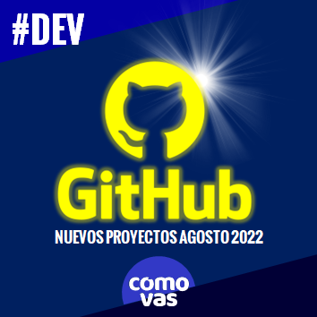
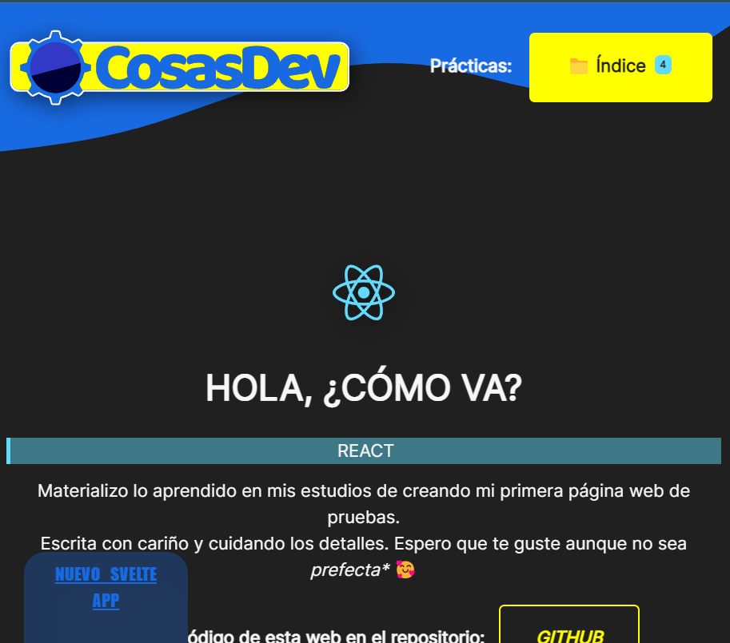
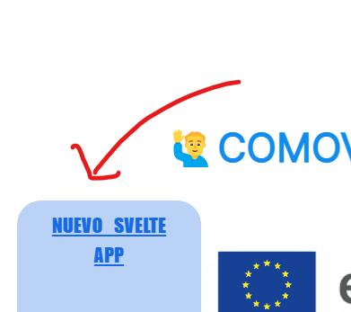

Durante estos meses de verano he aprovechado para augmentar mis habilidades sacándome la certificación PSMI (Scrum Master Profesional) pero también para augmentar mi portfolio personal en GITHUB. Este es un resumen de lo que he añadido.

COSASDEV
COSASDEV es la sección de mi web personal en donde los proyectos corriendo en la web. En esta ocasión he mejorado el diseño de la página inicial en REACT y añadiendo un botón muy especial.

Puedes leer más sobre COSASDEV aquí y visitar la web en https://cosasdev.comovas.es
MICROSERVICIOS
En la metodología SCRUM los equipos luchan por conseguir una funcionalidad acabada en menos de 1 mes y que se debe mostrar al cliente para obtener su feedback. Eso me hizo preguntarme cómo se podría implementar tan rápidamente una mejora contable. Los MICROSERVICIOS tienen muchas más ventajas -como correguir los errores de producción rápidamente o priorizar los recursos del servidor- pero no el BACKEND no se suele hacer.
Aunque es un ahorro de tiempo muy creativo. Este botón es una muestra: en verdad no está hecho en REACT. Toda la página está hecha en REACT pero este botón VUE y se está mostrando en otra parte del servidor. La implementación se ha hecho con un iframe de HTML. Con varios retoques del CSS muy integrado y fantástico.

EN RESUMEN...
| NOMBRE | REPOSITORIO | LIVE |
|---|---|---|
| COSAS DEV (REACT) | GITHUB 1 | WEB 1 |
| MICROSERVICIOS: BOTÓN | GITHUB 2 | WEB 2 |